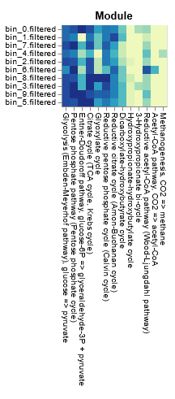
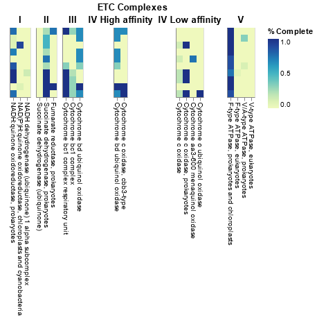
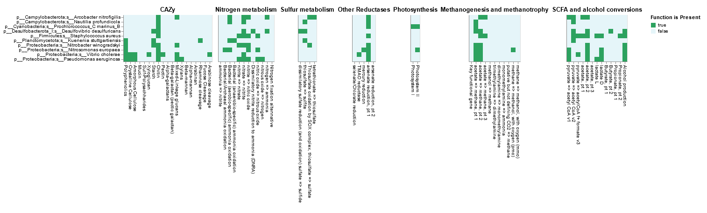

Gene annotation II: DRAM distillation¶
Overview of DRAM.py annotate output¶
The submitted jobs from the previous session should now be completed. If we examine the output directory 10.gene_annotation_and_coverage/dram_annotations/ we will see the following files:
| File name | Description |
|---|---|
genes.faa and genes.fna |
FASTA files with all the genes called by Prodigal, with additional header information gained from the annotation as nucleotide and amino acid records, respectively |
genes.gff |
GFF3 file with the same annotation information as well as gene locations |
scaffolds.fna |
A collection of all scaffolds/contigs given as input to DRAM.py annotate with added bin information |
annotations.tsv |
This file includes all annotation information about every gene from all MAGs |
trnas.tsv |
Summary of the tRNAs found in each MAG |
rrnas.tsv |
Summary of the rRNAs found in each MAG |
If we inspect the head of the annotation file we will see the following
code
Terminal output
fasta scaffold gene_position start_position end_position strandednessrank ko_id kegg_hit peptidase_id peptidase_family peptidase_hit peptidase_RBH peptidase_identity peptidase_bitScore peptidase_eVal pfam_hits cazy_id cazy_hits heme_regulatory_motif_count bin_taxonomy bin_completeness bin_contamination
bin_0_bin_0_NODE_11_length_360679_cov_0.995524_1 bin_0 bin_0_NODE_11_length_360679_cov_0.995524 1 1 213 -1 C K00873 pyruvate kinase [EC:2.7.1.40]Pyruvate kinase, barrel domain [PF00224.24] 0 d__Bacteria;p__Campylobacterota;c__Campylobacteria;o__Campylobacterales;f__Arcobacteraceae;g__Arcobacter;s__Arcobacter nitrofigilis 99.59 3.39
bin_0_bin_0_NODE_11_length_360679_cov_0.995524_2 bin_0 bin_0_NODE_11_length_360679_cov_0.995524 2 253 909 -1 C K22293 GntR family transcriptional regulator, rspAB operon transcriptional repressor FCD domain [PF07729.15]; Bacterial regulatory proteins, gntR family [PF00392.24] 0d__Bacteria;p__Campylobacterota;c__Campylobacteria;o__Campylobacterales;f__Arcobacteraceae;g__Arcobacter;s__Arcobacter nitrofigilis 99.59 3.39
bin_0_bin_0_NODE_11_length_360679_cov_0.995524_3 bin_0 bin_0_NODE_11_length_360679_cov_0.995524 3 1010 1843 -1 D Universal stress protein family [PF00582.29] 0 d__Bacteria;p__Campylobacterota;c__Campylobacteria;o__Campylobacterales;f__Arcobacteraceae;g__Arcobacter;s__Arcobacter nitrofigilis 99.59 3.39
bin_0_bin_0_NODE_11_length_360679_cov_0.995524_4 bin_0 bin_0_NODE_11_length_360679_cov_0.995524 4 1865 3397 -1 C K01708 galactarate dehydratase [EC:4.2.1.42] D-galactarate dehydratase / Altronate hydrolase, C terminus [PF04295.16] 0 d__Bacteria;p__Campylobacterota;c__Campylobacteria;o__Campylobacterales;f__Arcobacteraceae;g__Arcobacter;s__Arcobacter nitrofigilis 99.59 3.39
For each gene annotated, DRAM provides a summary rank (from A to E), representing the confidence of the annotation based on reciprocal best hits (RBH). The following figure briefly explains how this summary rank is calculated:

DRAM distillation of the results¶
After the annotation is finished, we will summarise and visualise these annotations with the so-called distillation step. We do so by running the following commands directly in the terminal. This will generate the distillate and liquor files for each dataset.
For the viral annotations, we will also include the parameters --remove_transposons ("Do not consider genes on scaffolds with transposons as potential AMGs") and --remove_fs ("Do not consider genes near ends of scaffolds as potential AMGs") to filter out some potential false positives for auxiliary metabolic gene identification.
code
DRAM.py distill output files¶
The DRAM distillation step generates the following files that can be found within the dram_distillation directory :
| File name | Description |
|---|---|
genome_stats.tsv |
Genome quality information required for MIMAG |
metabolism_summary.xlsx |
Summarised metabolism table containing number of genes with specific metabolic function identifiers |
product.html |
HTML file displaying a heatmap summarising pathway coverage, electron transport chain component completion, and presence/absence of specific functions |
product.tsv |
Data table visualised in product.html |
First, let's have a look at the genome_stats.tsv file to check the assembly quality of our bins by double-clicking the file within the Jupyter environment, viewing from the terminal via less or cat, or downloading the files from here and opening locally (e.g. via Excel).
To finish, we visualize the Product, an .HTML file produced in the distillation step, by double-clicking on it in our Jupyter lab notebook or downloading from here. The Product has three primary parts:
Product visualisation
Central metabolism pathways coverage. Completion of pathways is based on the structure of KEGG modules, with the pathway coverage calculated as the percent of steps with at least one gene present.


Electron Transport Chain component completion


Presence of specific functions, including CAZy, Nitrogen metabolism, Sulfur metabolism and Photosynthesis. Note that the taxonomic classification of each of the bins is also shown in the first figure


→